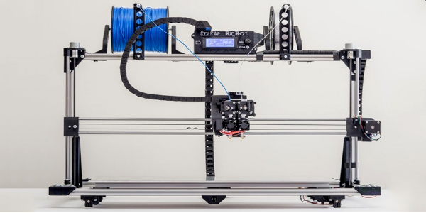
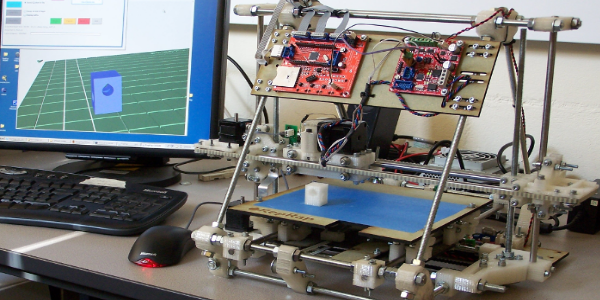
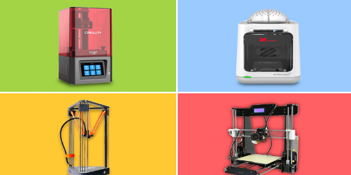

El origen de las impresoras se remonta en el año 1981, cuando el japonés Hideo Kodama inventó dos métodos de fabricación en plástico con un polímero que se endurecía con la luz ultravioleta



Fue en 1992 cuando se comercializaron las primeras impresoras SLA. Estas presentaban
algún defecto e imperfecciones, pero eran capaces de llevar a cabo la fabricación de
objetos finales capa por capa, haciendo el rayo ultravioleta solido el fotopolímero y
construyendo de esta forma el objeto en cuestión.
En 2005 Open-Source Colabora con la Impresión 3D, haciendo que eL Dr. Adrian Bowyer
funde RepRap, en la Universidad de Bath, una iniciativa de código abierto para
construir una impresora 3D que puede imprimir la mayoría de sus propios componentes.
La visión de este proyecto es el de democratizar la fabricación de unidades de
distribución de bajo coste RepRap a las personas de todo el mundo, lo que les
permite crear productos a diario por su cuenta, imprimiendo con filamento pla, abs, etc.
Historia de las impresoras 3D
12/Noviembre/2023 | Emilio Esqueda Rodríguez